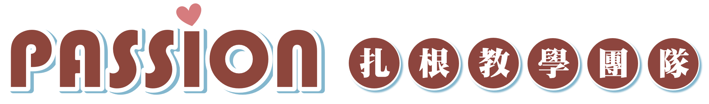

<nav>
    <div class="nav-container">
      <div class="logo">
        
        <span></span>
      </div>
  
      <ul class="menu" id="menu">
        <li><a href="#">關於我們</a>
          <ul>
            <li><a href="#team-intro" style="text-decoration:none;">團隊簡介</a></li>
            <li><a href="#PASSION-vision" style="text-decoration:none;">願景</a></li>
            <li><a href="#Org-Chart" style="text-decoration:none;">組織架構</a></li>
            <li><a href="#" style="text-decoration:none;">團隊任務</a></li>
          </ul>
        </li>
        <li><a href="#">最新消息</a>
          <ul>
            <li><a href="#" style="text-decoration:none;">研習活動</a></li>
            <li><a href="#" style="text-decoration:none;">講座活動</a></li>
          </ul>
        </li>
        <li><a href="#">團隊紀事</a>
          <ul>
            <li><a href="#" style="text-decoration:none;">108年度</a></li>
            <li><a href="#" style="text-decoration:none;">109年度</a></li>
            <li><a href="#" style="text-decoration:none;">110年度</a></li>
            <li><a href="#" style="text-decoration:none;">111年度</a></li>
            <li><a href="#" style="text-decoration:none;">112年度</a></li>
            <li><a href="#" style="text-decoration:none;">113年度</a></li>
          </ul>
        </li>
        <li><a href="#">歷年成效</a>
          <ul>
            <li><a href="#" style="text-decoration:none;">公部門成果</a></li>
            <li><a href="#" style="text-decoration:none;">其他NGO團體成果</a></li>
          </ul>
        </li>
        <li><a href="#">教學資源</a>
          <ul>
            <li><a href="#" style="text-decoration:none;">診斷測驗</a>
              <ul>
                <li><a href="https://passion.dacctest.net/index_passion.html" style="text-decoration:none;" target="_blank" rel="noopener noreferrer">DACC中文閱讀診斷平台</a></li>
                <li><a href="https://passion.dcectest.net/sys/index.aspx" style="text-decoration:none;" target="_blank" rel="noopener noreferrer">DCEC英語適性診斷平台</a></li>
                <li><a href="http://passion.dtmctest.net/intro/" style="text-decoration:none;" target="_blank" rel="noopener noreferrer">DTMC數學診斷測驗</a></li>
              </ul>
            </li>
            <li><a href="#" style="text-decoration:none;">教學平台</a></li>
            <li><a href="#" style="text-decoration:none;">教材資源</a>
              <ul>
                <li><a href="https://passiontw.net/SourceShare/Login.aspx" style="text-decoration:none;" target="_blank" rel="noopener noreferrer">扎根教學教材資源</a></li>
                <li><a href="#" style="text-decoration:none;">教學影片</a></li>
                <li><a href="#" style="text-decoration:none;">學生練習題</a></li>
              </ul>
            </li>
          </ul>
        </li>
        <li><a href="#">PASSION專欄</a>
          <ul>
            <li><a href="#" style="text-decoration:none;">教學現場回饋</a></li>
            <li><a href="#" style="text-decoration:none;">教育新知</a></li>
          </ul>
        </li>
        <li><a href="#">合作接洽</a>
          <ul>
            <li><a href="#contactUS" style="text-decoration:none;">聯絡方式</a></li>
          </ul>
        </li>
      </ul>
  
      <button class="menu-toggle" onclick="toggleMenu()" aria-label="切換選單">☰</button>
    </div>
  </nav>
  